Advanced features
advanced-features.Rmd
library(ggplot2)
library(mekko)
titanic <- as.data.frame(Titanic)This vignette covers the advanced features of mekko
beyond the basics shown in vignette("getting-started").
Spine plots (standardize)
A spine plot is a Marimekko chart where all columns have equal width. This shifts the emphasis from marginal proportions to conditional proportions, making it easier to compare segment heights across columns.
Set standardize = TRUE:
ggplot(titanic) +
geom_mekko(aes(x = Class, fill = Survived, weight = Freq),
standardize = TRUE
) +
scale_x_mekko() +
labs(
title = "Spine plot: equal-width columns",
y = "Conditional proportion"
)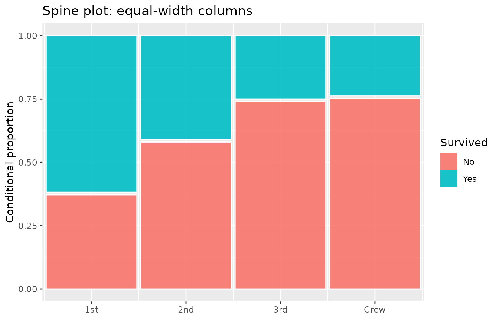
Compare this with the standard Marimekko to see how class sizes differ:
p_base <- ggplot(titanic) +
scale_x_mekko() +
labs(y = "Proportion")
p1 <- p_base +
geom_mekko(aes(x = Class, fill = Survived, weight = Freq)) +
labs(title = "Marimekko (proportional widths)")
p2 <- p_base +
geom_mekko(aes(x = Class, fill = Survived, weight = Freq),
standardize = TRUE
) +
labs(title = "Spine (equal widths)")
# Side-by-side (requires patchwork or gridExtra)
# p1 + p2
p1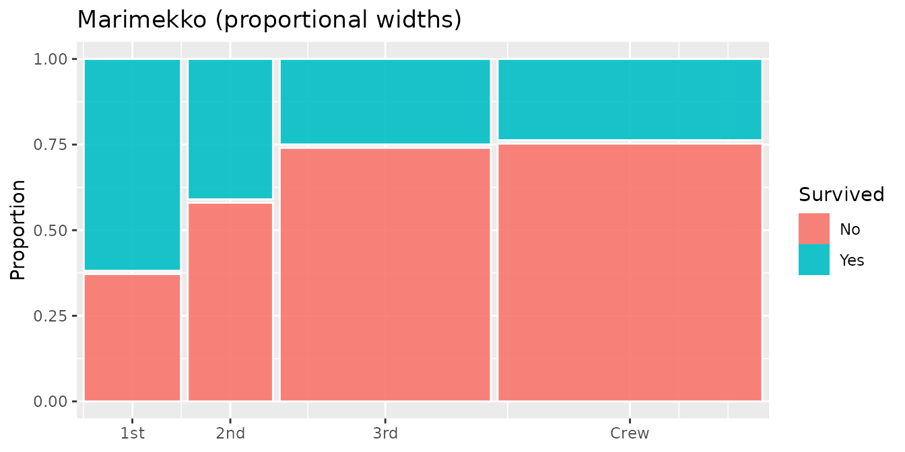
p2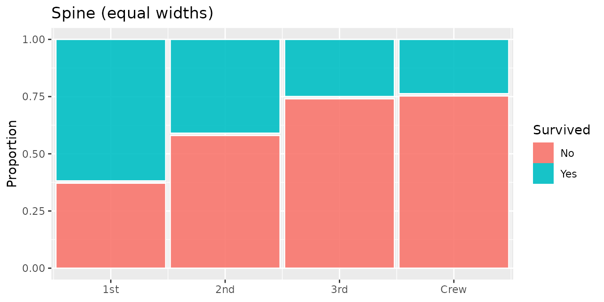
Pearson residuals
Pearson residuals measure how much each cell deviates from the independence assumption. Positive residuals indicate more observations than expected; negative residuals indicate fewer.
Set residuals = TRUE to compute residuals. They are
exposed as the .resid computed variable, which you can map
to an aesthetic via after_stat():
ggplot(titanic) +
geom_mekko(
aes(
x = Class, fill = Survived, weight = Freq,
alpha = after_stat(abs(.resid))
),
residuals = TRUE
) +
scale_x_mekko() +
scale_alpha_continuous(range = c(0.3, 1), guide = "none") +
labs(title = "Residual shading: stronger opacity = larger deviation")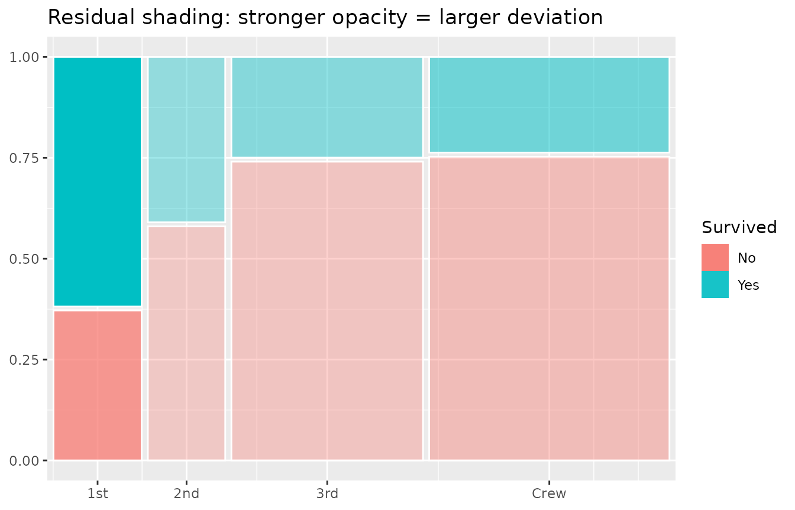
You can also map residuals to colour instead of relying on fill:
ggplot(titanic) +
geom_mekko(aes(x = Class, fill = Survived, weight = Freq),
residuals = TRUE
) +
geom_mekko_text(aes(
x = Class, fill = Survived, weight = Freq,
label = after_stat(round(.resid, 1))
), residuals = TRUE, colour = "white", size = 3) +
scale_x_mekko() +
labs(title = "Pearson residuals as labels")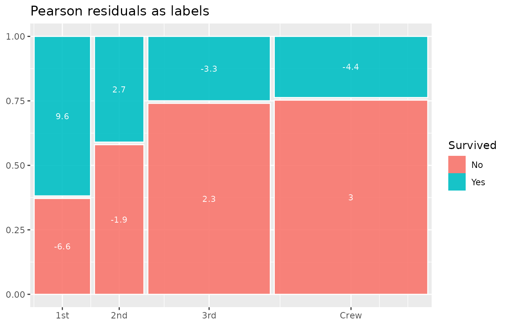
Chi-squared test annotation
annotate_chisq() runs a chi-squared test of independence
and places the result (test statistic, degrees of freedom, p-value) as a
text annotation:
ggplot(titanic) +
geom_mekko(aes(x = Class, fill = Survived, weight = Freq),
residuals = TRUE
) +
scale_x_mekko() +
annotate_chisq(titanic, Class, Survived, weight = Freq) +
labs(title = "Mosaic plot with chi-squared test")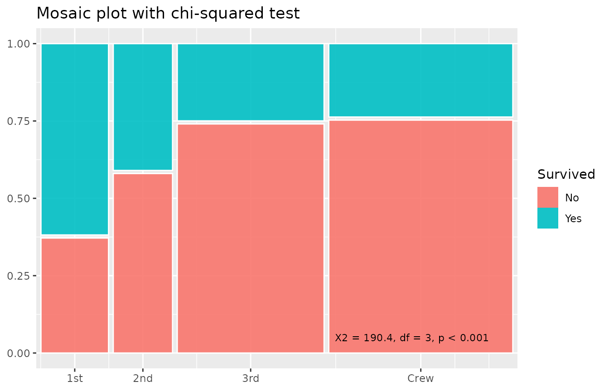
Customize the annotation position and appearance:
ggplot(titanic) +
geom_mekko(aes(x = Class, fill = Survived, weight = Freq)) +
scale_x_mekko() +
annotate_chisq(titanic, Class, Survived,
weight = Freq,
pos_x = 0.5, pos_y = 0.95, hjust = 0.5,
size = 4, fontface = "italic"
)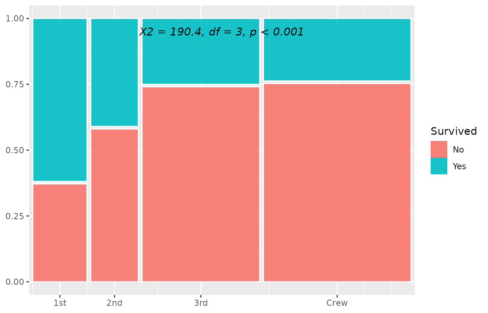
Jittered points
For small-to-medium datasets, geom_mekko_jitter()
scatters individual data points inside their corresponding mosaic tile.
Each row is expanded by its weight, so weighted data shows the correct
number of points.
ucb <- as.data.frame(UCBAdmissions)
ucb_a <- ucb[ucb$Dept == "A", ]
ggplot(ucb_a) +
geom_mekko(aes(x = Gender, fill = Admit, weight = Freq),
alpha = 0.3
) +
geom_mekko_jitter(aes(x = Gender, fill = Admit, weight = Freq),
seed = 42, size = 0.8
) +
scale_x_mekko() +
labs(title = "UCB admissions, Dept A: individual applicants")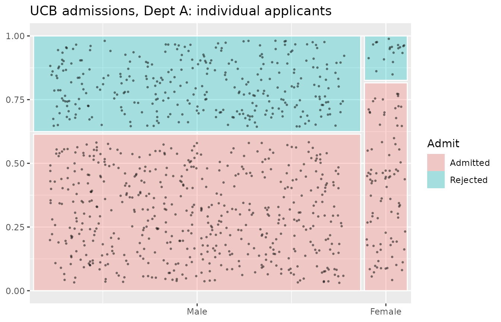
Set seed for reproducible jitter placement.
Three-variable nested mosaic
geom_mekko_multi() adds a third categorical variable
(split) that subdivides each column horizontally before
stacking fill vertically:
- Column widths encode
xproportions - Sub-column widths within each column encode conditional
splitproportions givenx - Segment heights encode conditional
fillproportions givenxandsplit
ggplot(titanic) +
geom_mekko_multi(aes(
x = Class, split = Sex, fill = Survived, weight = Freq
)) +
scale_x_mekko() +
labs(title = "Nested mosaic: Class > Sex > Survived")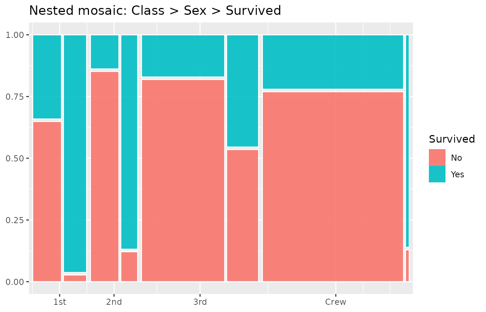
This produces a richer view than faceting because all three variables share a single coordinate space, making relative proportions directly comparable.
Y-axis scale
By default the y-axis shows proportions from 0 to 1.
scale_y_mekko() replaces that with fill category labels at
segment midpoints:
ggplot(titanic) +
geom_mekko(aes(x = Class, fill = Survived, weight = Freq)) +
scale_x_mekko() +
scale_y_mekko() +
labs(title = "Fill labels on y-axis")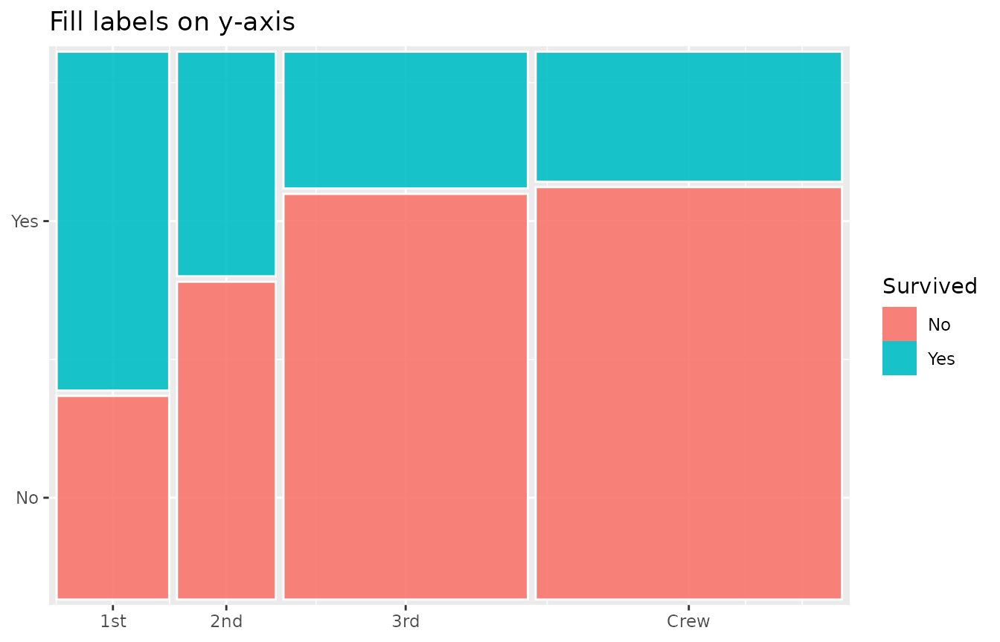
This is most useful when you want to de-emphasize the numeric proportions and instead label segments directly.
Data extraction with fortify
fortify_mekko() returns computed tile positions as a
plain data frame without creating a plot. This is useful for:
- Custom downstream analysis
- Manual ggplot2 layer construction
- Exporting tile coordinates
tiles <- fortify_mekko(titanic, Class, Survived, weight = Freq)
head(tiles)
#> x_label fill_label xmin xmax ymin ymax x
#> 1 1st No 0.0000000 0.1432303 0.0000000 0.3716308 0.07161517
#> 5 1st Yes 0.0000000 0.1432303 0.3816308 1.0000000 0.07161517
#> 2 2nd No 0.1532303 0.2788323 0.0000000 0.5801053 0.21603135
#> 6 2nd Yes 0.1532303 0.2788323 0.5901053 1.0000000 0.21603135
#> 3 3rd No 0.2888323 0.5999727 0.0000000 0.7403966 0.44440254
#> 7 3rd Yes 0.2888323 0.5999727 0.7503966 1.0000000 0.44440254
#> y weight cond_prop
#> 1 0.1858154 122 0.3753846
#> 5 0.6908154 203 0.6246154
#> 2 0.2900526 167 0.5859649
#> 6 0.7950526 118 0.4140351
#> 3 0.3701983 528 0.7478754
#> 7 0.8751983 178 0.2521246With residuals:
tiles_resid <- fortify_mekko(titanic, Class, Survived,
weight = Freq, residuals = TRUE
)
head(tiles_resid)
#> x_label fill_label xmin xmax ymin ymax x
#> 1 1st No 0.0000000 0.1432303 0.0000000 0.3716308 0.07161517
#> 5 1st Yes 0.0000000 0.1432303 0.3816308 1.0000000 0.07161517
#> 2 2nd No 0.1532303 0.2788323 0.0000000 0.5801053 0.21603135
#> 6 2nd Yes 0.1532303 0.2788323 0.5901053 1.0000000 0.21603135
#> 3 3rd No 0.2888323 0.5999727 0.0000000 0.7403966 0.44440254
#> 7 3rd Yes 0.2888323 0.5999727 0.7503966 1.0000000 0.44440254
#> y weight cond_prop .resid
#> 1 0.1858154 122 0.3753846 -6.607873
#> 5 0.6908154 203 0.6246154 9.565772
#> 2 0.2900526 167 0.5859649 -1.867159
#> 6 0.7950526 118 0.4140351 2.702959
#> 3 0.3701983 528 0.7478754 2.289965
#> 7 0.8751983 178 0.2521246 -3.315027The returned columns are:
| Column | Description |
|---|---|
x_label |
Category name for the x variable |
fill_label |
Category name for the fill variable |
xmin, xmax
|
Horizontal extent of the tile |
ymin, ymax
|
Vertical extent of the tile |
x, y
|
Tile center coordinates |
weight |
Aggregated count |
cond_prop |
Conditional proportion within the column |
.resid |
Pearson residual (when residuals = TRUE) |
You can use the fortified data frame to build completely custom plots:
tiles <- fortify_mekko(titanic, Class, Survived, weight = Freq)
ggplot(tiles) +
geom_rect(
aes(
xmin = xmin, xmax = xmax,
ymin = ymin, ymax = ymax,
fill = fill_label
),
colour = "grey30", linewidth = 0.3
) +
geom_text(aes(x = x, y = y, label = weight), size = 3) +
theme_minimal() +
labs(fill = "Survived")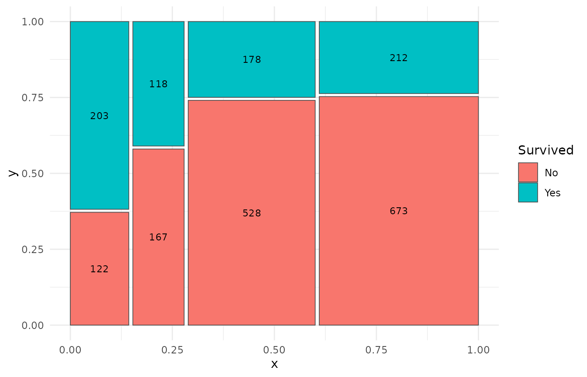
Combining layers
Because mekko produces standard ggplot2 layers, you can
freely combine multiple features:
ggplot(titanic) +
geom_mekko(
aes(
x = Class, fill = Survived, weight = Freq,
alpha = after_stat(abs(.resid))
),
residuals = TRUE
) +
geom_mekko_text(aes(
x = Class, fill = Survived, weight = Freq,
label = after_stat(weight)
), colour = "white", size = 3.5) +
scale_x_mekko(show_percentages = TRUE) +
scale_alpha_continuous(range = c(0.4, 1), guide = "none") +
annotate_chisq(titanic, Class, Survived, weight = Freq) +
theme_mekko() +
labs(
title = "Full-featured mosaic plot",
subtitle = "Residual shading + counts + marginal % + chi-squared test",
y = "Proportion"
)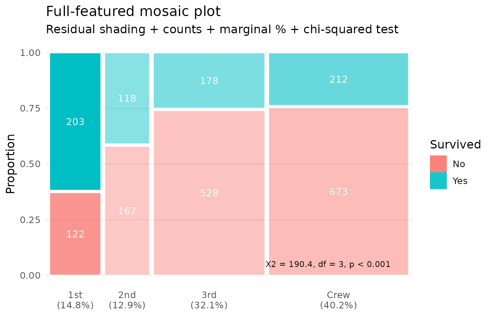
Independent x/y gaps
By default, gap controls both horizontal (between
columns) and vertical (between segments) spacing. Use gap_x
and gap_y to set them independently:
ggplot(titanic) +
geom_mekko(aes(x = Class, fill = Survived, weight = Freq),
gap_x = 0.04, gap_y = 0
) +
scale_x_mekko() +
labs(title = "Wide column gaps, no vertical gaps")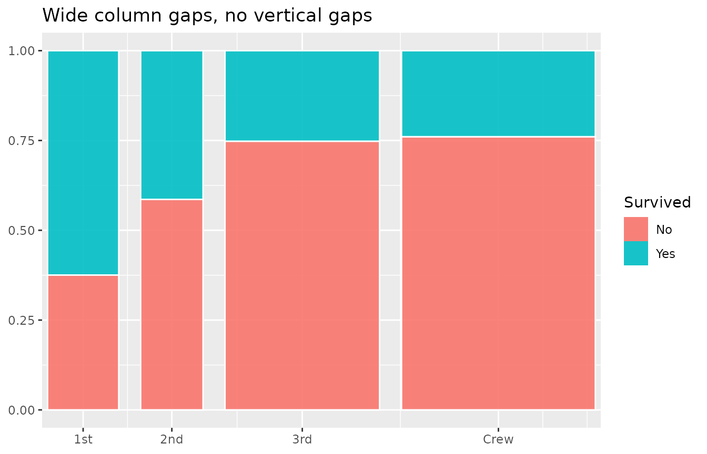
ggplot(titanic) +
geom_mekko(aes(x = Class, fill = Survived, weight = Freq),
gap_x = 0, gap_y = 0.03
) +
scale_x_mekko() +
labs(title = "No column gaps, visible vertical gaps")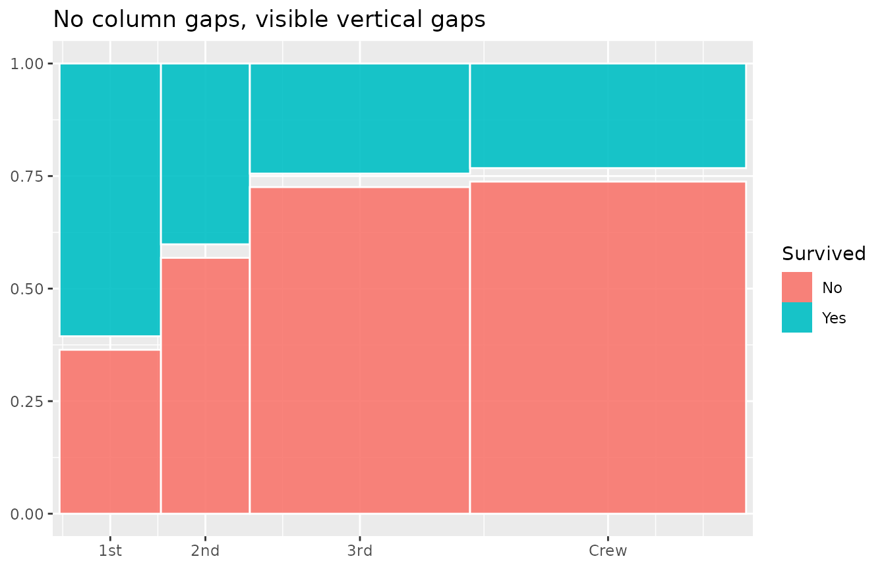
Plotly interactive tooltips
StatMarimekko computes a .tooltip variable
containing a formatted summary of each tile (category names, count, and
proportion). Map it to the text aesthetic for use with
plotly::ggplotly():
library(plotly)
p <- ggplot(titanic) +
geom_mekko(aes(
x = Class, fill = Survived, weight = Freq,
text = after_stat(.tooltip)
)) +
scale_x_mekko()
ggplotly(p, tooltip = "text")The .tooltip variable is also available via
after_stat() for custom label construction.
In-aesthetic expressions
Unlike some mosaic packages, mekko supports standard
ggplot2 tidy evaluation inside aes(). You can transform
variables inline:
ggplot(mtcars) +
geom_mekko(aes(x = factor(cyl), fill = factor(gear))) +
scale_x_mekko() +
labs(
x = "Cylinders", fill = "Gears",
title = "factor() inside aes() works"
)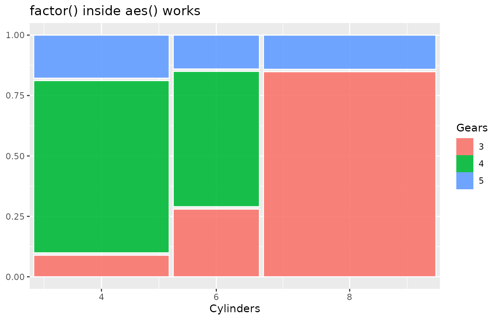
Namespace-qualified usage
mekko works correctly when called with ::
notation (e.g., mekko::geom_mekko()) without requiring
library(mekko). This makes it safe to use inside other
packages via Imports rather than Depends.
Summary of parameters
| Parameter | Used in | Description |
|---|---|---|
gap |
geom_mekko(), geom_mekko_text(),
geom_mekko_label(), geom_mekko_jitter(),
geom_mekko_multi(), fortify_mekko()
|
Spacing between tiles (fraction of plot area) |
gap_x |
All geom/stat/fortify functions | Horizontal gap (overrides gap for x) |
gap_y |
All geom/stat/fortify functions | Vertical gap (overrides gap for y) |
standardize |
geom_mekko(), geom_mekko_text(),
geom_mekko_label(), geom_mekko_jitter(),
fortify_mekko()
|
Equal-width columns (spine plot) |
residuals |
geom_mekko(), geom_mekko_text(),
geom_mekko_label(), fortify_mekko()
|
Compute Pearson residuals |
seed |
geom_mekko_jitter() |
Reproducible jitter placement |
show_percentages |
scale_x_mekko() |
Append marginal % to x-axis labels |